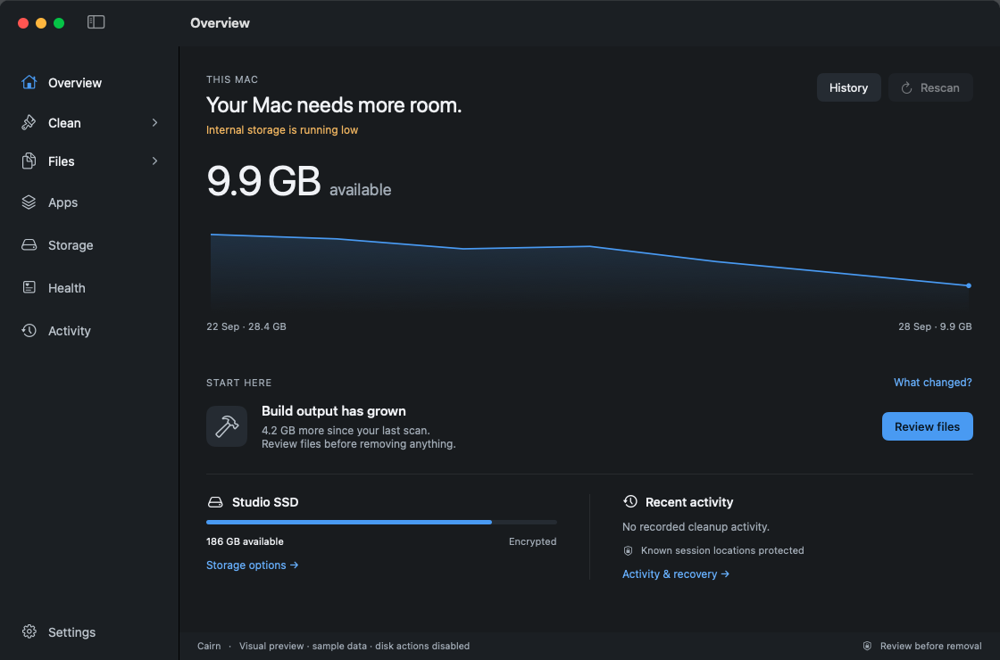

Cairn for macOS
Know what to keep.
Know what can go.
Cairn shows the space you have and what its scans find. Review the exact files before anything changes, and make room without losing track of the work behind it.
See what changed.
Available space, recent history, and scan findings in one place. Cairn calls out incomplete measurements instead of inventing an answer.

Overview shows available space, recent history, and a next step grounded in measured findings.
From full to understood.
A good storage tool should show its work. Cairn takes you from a broad view to an exact path before you decide what to do.
-
01
See the picture
Follow available space over time and scan categories when you need a closer look.
-
02
Review the path
Inspect individual files, locations, and requirements before selecting anything.
-
03
Choose the next step
Approve a change deliberately, then find its record in Activity & Recovery.
Your source code
is not clutter.
Known project, session, credential, and recovery locations are protected. Cairn asks you to review exact paths before removal and keeps a record of changes it makes.
The idea behind the nameExternal copies keep the original in place. They are not presented as freed internal space or as a complete backup.
Why Cairn?
A marker for the way forward.
A cairn (“kairn” in the UK, “kern” in the US) is a stack of stones that marks a path. On a crowded Mac, the next step should feel just as clear.